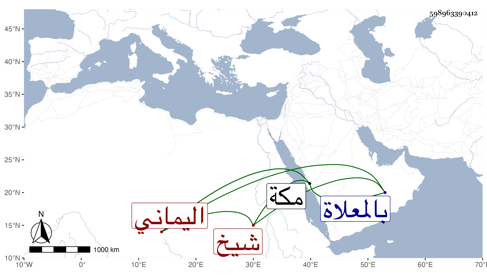

0902Sakhawi.DawLamic.ITO20230111-ara1.EIS1600.598963390412
Biography ID: 598963390412
إبراهيم بن محمد بن إبراهيم اليماني شيخ رباط بمكة بعد الشهاب بن المسدي واستمر حتى مات في آخر يوم الجمعة وأول ليلة السبت سابع عشر ذي الحجة سنة اثنتين وثمانين بمكة ودفن بالمعلاة وقد فرط في ذلك من كتب الرباط بعاريتها لمن لا يعرفه أو لمن يختلسها مما لا تحامل عليه صلاحيته وغفلته . ذكره العز بن فهد .
